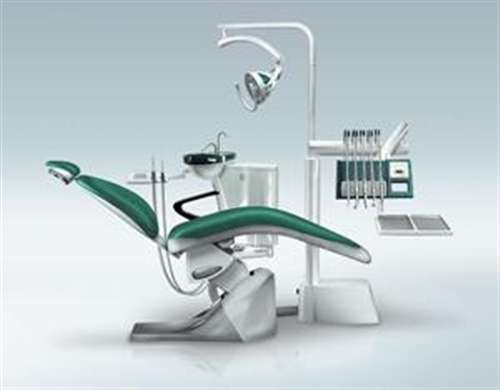

.PNG)
Ou trouver l'offre Materiel dentaire au meilleur prix Chez odonte organisme bien sur Avec des prix au plus bas aujourd'hui Mardi 10 septembre 2019, comment ne pas craquer pour l'un de ces 3597 produits, a l'image de la bombe du jour le kit de blanchiment dentaire Veritable blanchiment dentaire pour faire disparaitre les taches jaunatres. a chaque visite, retrouvez bons plans et promotions incroyables sur les plus grandes marques de cet univers Blanchiment des dents
NOUVELLE FAUTEUIL DENTAIRE

La necessite de mettre a jour une clinique est appreciee, par exemple, lorsque le technicien entreprend des renovations frequentes. Parfois, tous les elements en plastique des fauteuils dentaires, tels que les tuyaux, le systeme d'aspiration interne et externe ou les drains, se degradent et se dessechent, ce qui peut entrainer des pertes et des fuites. En ce sens, on estime que les plastiques ont une duree de vie de 10 ans. Un fauteuil dentaire moderne est dote de nouveaux traitements et de nouveaux materiaux qui prolongent cette vie utile. a ce stade, la gestion dentaire est essentielle
COMMANDES INTELLIGENTES
Les details integres et les commandes holistiques permettent d'acceder a vos instrument cliniques,de les activer et de les desactiver en toute
simplicite,sans meme devoir y penser.Le materiel se fait plus que discret,grace a quoi vous pouvez vousconcentrer totalement sur les soins dentaires
kit blanchissement
Nouveau materiel dentaire blanchiment des dents LED
10x3 ml de gel de blanchiment(0,1%de peroxyde de carbamide), 2 plateaux buccaux, 1xMini lampe LED pour bouche